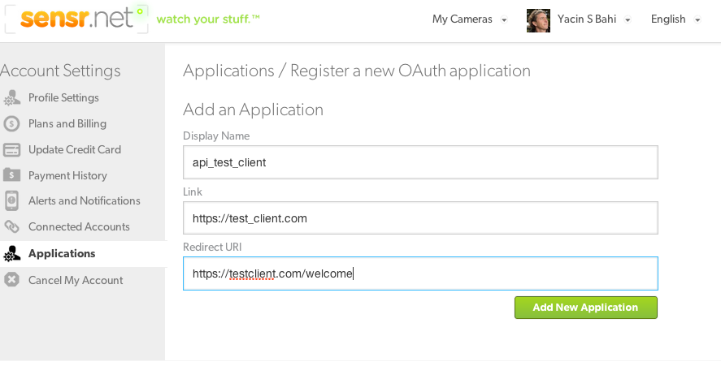
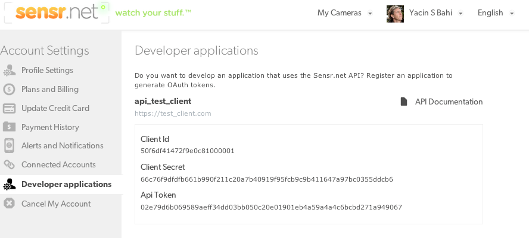

Welcome to the Sensr.net Apis
The Sensr.net APIs allows you to programmatically access content from cameras on Sensr.net. For example, with the API you can write a ruby program to build a time-lapse from your camera images, or extract motion trends across several weeks. The first paragraph consists of a quick start guide. The second introduces a couple of example scripts and tries to explain the guiding principles behind the Apis and how to better leverage them.
We always welcome feedback, please send your feedback regarding our Apis to developers At sensr.net
Quick start guide
This is a three step guide that should get you started and running (in ruby) quickly. You will need an account on Sensr.net to get access to your Api keys.
Download the sensr.net gem
Use the .tar.gz or the .zip links on the top right of this page to download the sensrapi gem file. Or just wget the gem file. We're in the process of publishing the gem, eventually you'll be able to just run agem install command.
wget https://github.com/yacc/sensrapi-tutorials/sensrapi.gem
Get your Api secret keys
First, login to your sensr.net account and navigate to https://sensr.net/account/applications. Then create a new api client, you will be asked to fill out a form with the following elements Display Name, Link and Redirect Url. Don't pay too much attention to this now, we'll get back to it later (it's all oauth2 related). 
Assuming everything went well, you should now be seeing you api client ID and client secret. 
Open your irb console and write some code
require 'sensr'
Sensr.oauth_token = 'asaha7yqwokq08ru1hfkajfy7gerh'
cam_id = ARGV[0].to_i
c = Sensr::Camera.find(cam_id)